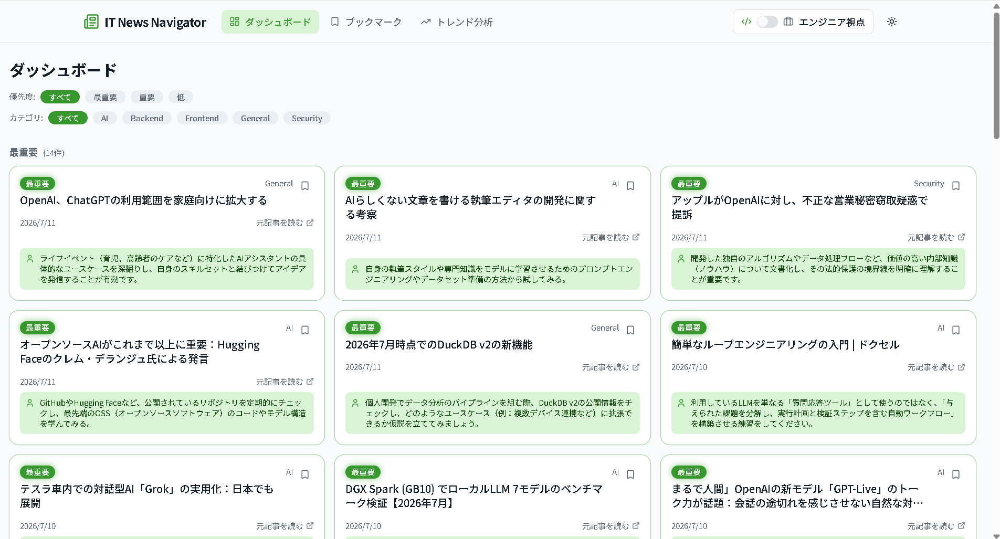
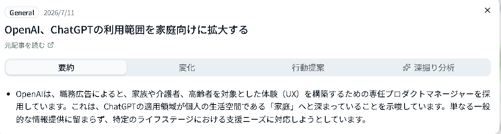
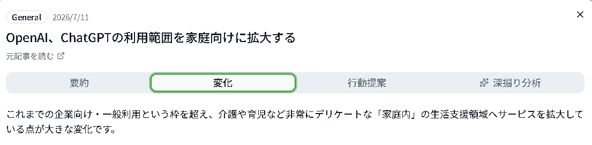
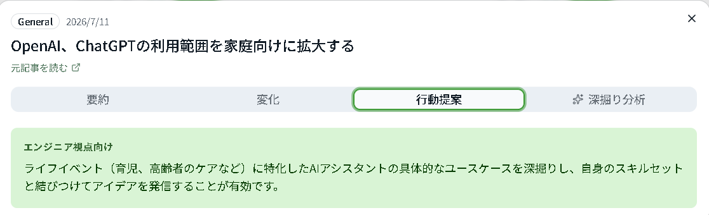
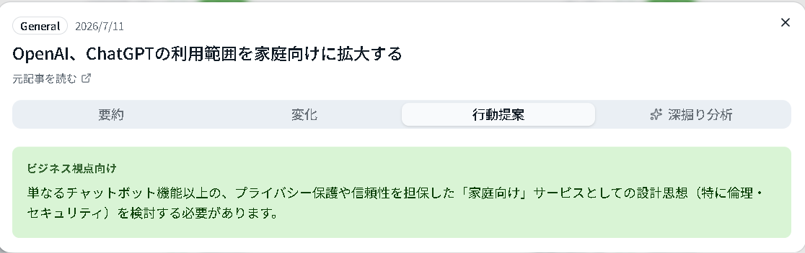
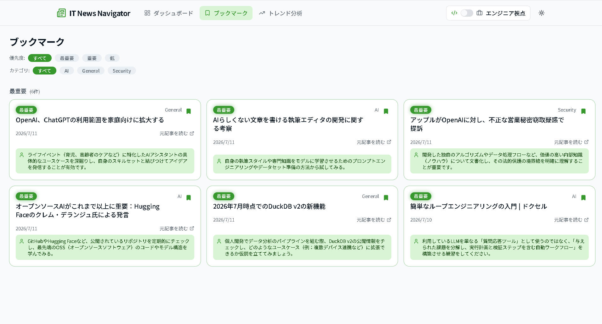
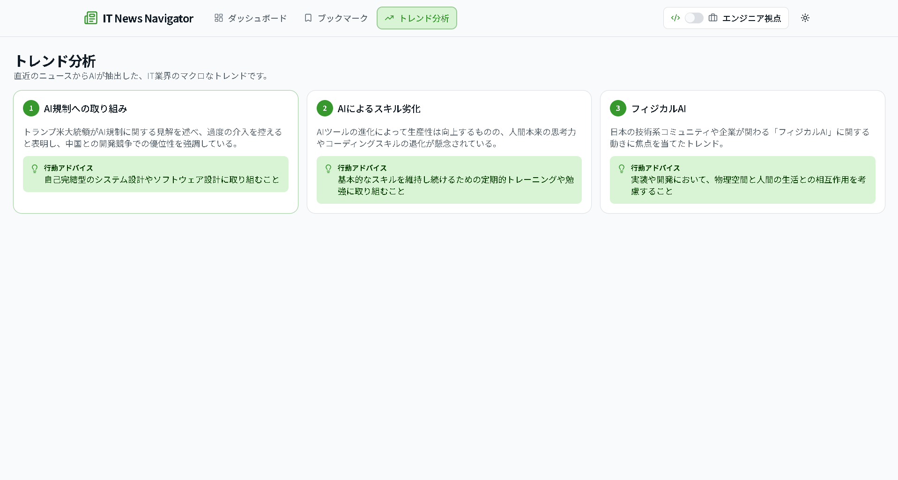
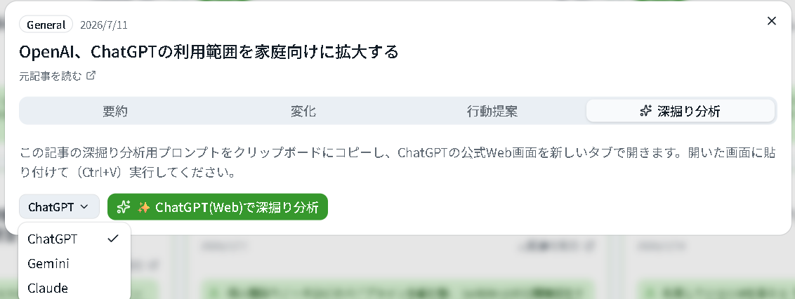
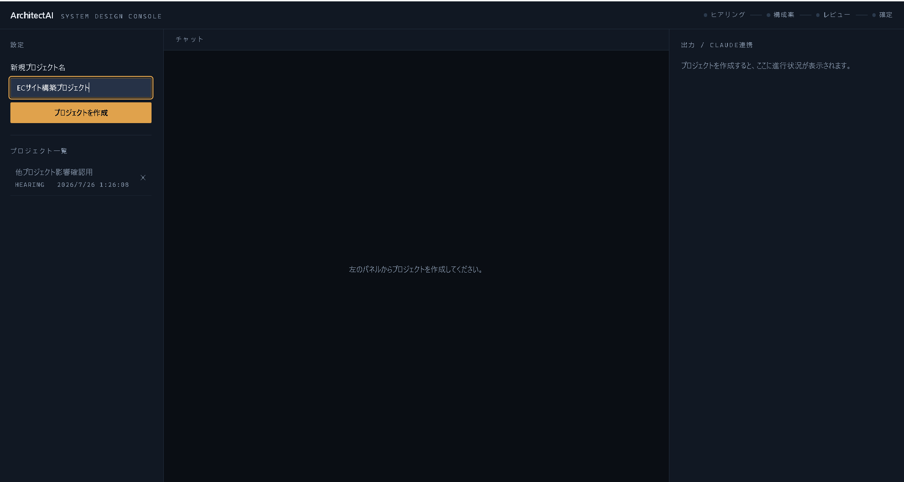
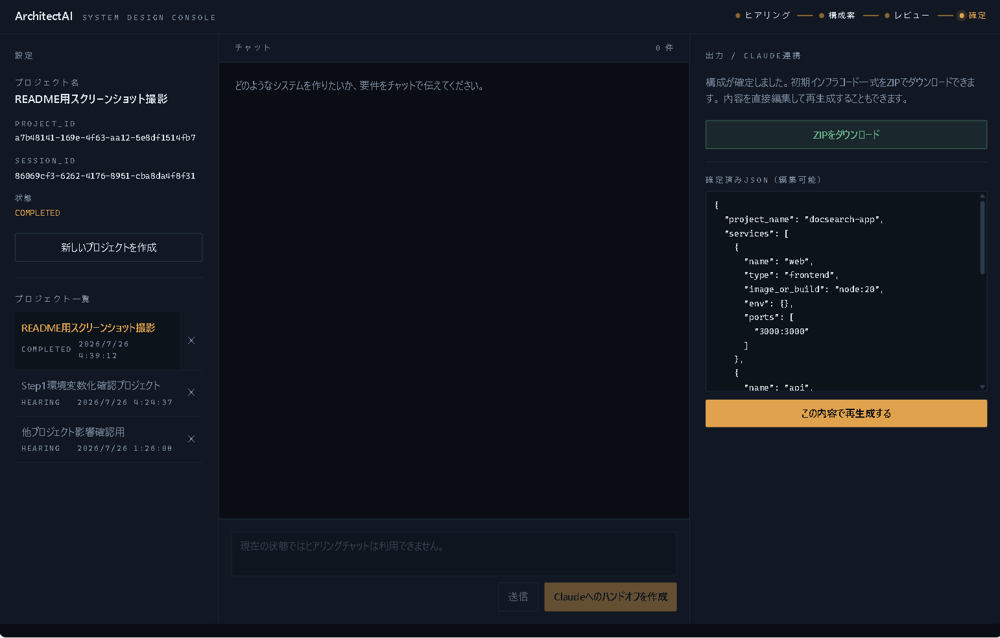

💡 開発の背景
AI・IT分野は情報量が爆発的に増え、個人では追い切れなくなっています。
情報収集・整理に時間を奪われ、判断や行動に使う時間が減っていました。
実際に業務でも、最新情報のキャッチアップに時間がかかるという課題がありました。
🖥 画面一覧

ダッシュボード
- できること優先度・カテゴリ別に整理されたニュース一覧を表示
- 価値重要な情報だけを数秒で把握でき、記事を読み漁る必要がない
- 裏側処理RSSで収集した記事をAIが要約・優先度判定し、DBに保存して表示

要約

変化

行動提案（エンジニア視点）

行動提案（ビジネス視点）
記事詳細
- 3タブの意味「要約」「変化」「行動提案」を分けて何が起き何をすべきかを明示
- 意思決定への活用行動提案タブを見るだけで次のアクションを判断できる
- AI処理ローカルAIが記事本文から3種のアウトプットを構造化して生成

ブックマーク
- 操作気になる記事をワンクリックで保存し、一覧から後で見返せる
- 状態管理Zustandで保存状態を管理し、画面間で即座に反映

トレンド分析
- できること直近の記事群からAIが業界トレンドを3件に集約
- 価値個別記事を読まずに、業界の流れを短時間で把握できる
- 裏側処理複数記事のテキストをAIへ入力し傾向を抽出、12時間キャッシュで再計算を抑制

深掘り分析
- 目的ローカルAIでは踏み込めない、より高度な分析を行う
- 意思決定への貢献精度の高い分析結果を踏まえて判断できる
- 外部AI連携プロンプトを自動生成し「ChatGPT / Gemini / Claude」の公式画面へ引き渡すマルチAIハンドオフ方式を採用。API課金ゼロを実現しつつ、ユーザーの選択状態をZustandで永続化し、毎回選ぶ手間（トイル）を排除。
🔄 システムの流れ
RSS収集 → API処理 → AI要約・行動提案 → DB保存 → ダッシュボード表示
🏗 技術構成
ChatGPT / Gemini / Claude
高度分析（深掘り分析）
⭐ 技術的な工夫
課題：AI出力が不安定
JSON Schemaで構造化し、崩れた出力を検知・リトライして安定化しました。
課題：API費用がかさむ
日常の要約・分析はローカルLLM（Ollama）で処理し、運用コストをゼロにしました。
課題：AIの適材適所とベンダーロックイン回避
基本分析はローカルAI、高度な分析が必要な時だけ「ChatGPT / Gemini / Claude」からユーザーが自由に選択してプロンプトを引き渡すマルチAI設計にし、特定LLMへの依存リスクを排除。
課題：負荷・コスト対策
トレンド分析は12時間キャッシュし、AIへの再計算リクエストを抑制しました。
課題：本文抽出精度と記事の重複
RSSスニペットのみでは情報量が薄く重複記事も発生していたため、Python（trafilatura／rapidfuzz）をサブプロセス化して本文抽出と重複検出を導入し、失敗時は既存処理へフォールバックする設計にしました。
課題：記事蓄積によるダッシュボードの視認性低下
直近1週間の記事のみをダッシュボードに表示し、それ以前の記事は専用の過去ニュースページへ分離しました。
👤 自分の担当
要件定義・設計・実装・テストまで、個人開発で一貫して担当しました。
🛠 課題と解決
発生した問題：ローカルLLMが低頻度で同一文字列を無限に繰り返す出力崩壊を起こしました。
解決方法：自動リトライと英語混入検知による再翻訳処理を組み込み、安定運用を実現しました。
💼 ビジネス価値
社内マニュアル検索・議事録分析・問い合わせ履歴分析など、社内ナレッジ活用へ応用できます。
情報収集・共有にかかる時間を削減し、意思決定のスピードを上げる業務改善に貢献します。
🚀 今後の拡張
- AIエージェント化（行動提案の自動実行）
- Microsoft 365連携
💡 開発の背景
新規システムの立ち上げ時、「作りたいものは何となくあるが、要件として言語化し、技術構成に落とし込む」作業には時間がかかります。
個人開発では特に、要件定義から初期インフラ構築までを独力で進める必要があり、思いつきレベルのアイデアから「動かせる初期構成」までの距離を縮めたいと考えました。
そこでAIとの対話だけで要件定義〜設計〜レビュー〜IaC生成までを一気通貫で支援するツールを開発しました。
🖥 画面一覧

初期画面・プロジェクト管理
- できることプロジェクト名を入力するだけでヒアリング用セッションを自動生成
- 状態の永続化session_idをlocalStorageに保存し、画面をリロードしても作業中の状態を保持

構成確定・IaC生成
- Human-in-the-LoopローカルAIが作成した構成案をClaude Webで人間がレビューし、最終JSONとして確定
- 編集・再生成確定後もJSONを画面上で直接編集し、既存のバリデーションを通した上で再生成できる
- IaC自動生成確定JSONからDocker Compose一式をZIPとして自動生成
🔄 システムの流れ
ヒアリング（Ollama） → 構成案作成（Ollama） → Claude Webレビュー → 確定JSON → IaC自動生成（ZIP）
🏗 技術構成
Claude Web
最終レビュー（Human-in-the-Loop）
⭐ 技術的な工夫
課題：AIの提案をそのまま信用できない
Claude Webでのレビューを必須経路として残すHuman-in-the-Loop設計とし、確定後もJSONを画面上で編集・再生成できるようにして、レビューの厳格さと修正のしやすさを両立しました。
課題：生成コードへのインジェクションリスク
サービス名を英数字・ハイフン・アンダースコアのみに正規表現でサニタイズし、docker-compose.ymlの構造が意図せず壊れることを防止しました。
課題：確定後の再編集で過去の内容を失う
編集のたびに新しいバージョンとして履歴に追記する設計にし、常に最新の構成をエクスポートしつつ過去の確定内容も失わないようにしました。
課題：認証情報の平文管理
DB認証情報を.envファイルへ分離し、.gitignoreで除外。リポジトリには値をプレースホルダー化した.env.exampleのみを含める運用にしました。
🛠 課題と解決
発生した問題：Tailwindのカラートークンを16進数のままCSS変数化したところ、bg-primary/10のような透明度修飾子が正しく機能せず、意図した色が描画されない不具合が発生しました。
解決方法：カラートークンをRGBチャンネル値として定義し直し、rgb(var(--x) / <alpha-value>)形式に統一することで、透明度修飾子が正しく機能するようにしました。
👤 自分の担当
要件定義・設計・実装・テストまで、個人開発で一貫して担当しました。
💼 ビジネス価値
新規プロジェクトの要件定義・技術選定を支援するツールとして、社内の企画・PM業務に応用できます（AIヒアリングによる要件整理の効率化）。
Human-in-the-Loop設計により、AI活用と人間の最終判断の両立が求められる業務（技術検証、設計レビュー等）のワークフローテンプレートとして応用できます。
🚀 今後の拡張
- 1プロジェクトにつき複数セッションを保持できるようにする
- IaC生成テンプレートの対象をDocker Compose以外にも拡張する
- Claude APIとの直接連携オプションを追加する